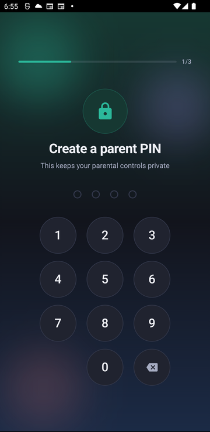
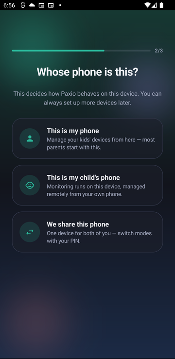
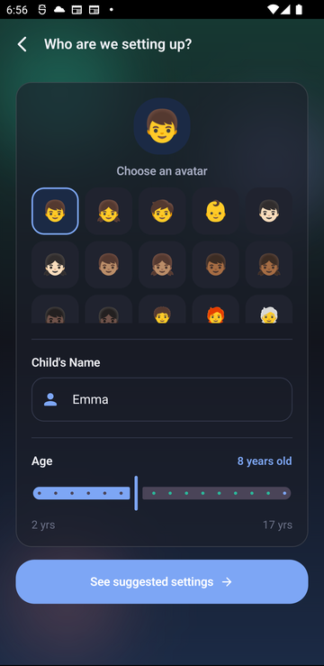
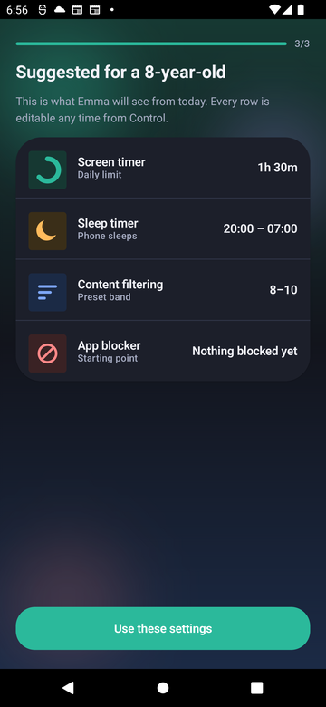
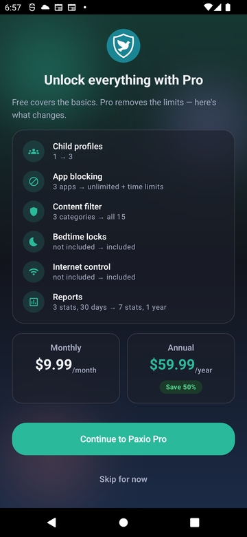

Onboarding: setting up your first child profile
Last updated: 26 August 2026
After you sign up, Paxio walks you through a short guided setup before you reach your dashboard: a parent PIN, whose phone this is, your first child's profile, suggested settings, permissions (on a child's device), and a one-time look at Pro.
Create your parent PIN
- Enter a 4-digit PIN. This keeps your parental controls private from your child.
- Enter it again to confirm — you'll see "Confirm your PIN" on the same screen.

The "Create a parent PIN" screen.
Choose whose phone this is
- "This is my phone" — manage your kids' devices remotely from here. Most parents start with this.
- "This is my child's phone" — monitoring runs on this device, managed remotely from your own phone.
- "We share this phone" — one device for both of you; switch between parent and child view with your PIN.

The "Whose phone is this?" screen.
Add your child's profile
- Pick an avatar from the grid.
- Enter your child's name and set their age with the slider.
- Tap "See suggested settings" — Paxio proposes age-appropriate limits you can adjust before saving.

The "Who are we setting up?" screen.
Review suggested settings
- Paxio proposes settings for your child's age — a screen timer, sleep timer, content-filter band, and app blocker starting point.
- Tap "Use these settings" to accept them and continue. Every row stays editable later from the Control tab.

The suggested-settings review screen.
Grant permissions (child's device only)
This step only appears on a device set to "This is my child's phone," or a shared device switched into child view — a "This is my phone" device never sees it, since permissions are only needed to run enforcement on a child-facing device.
- Paxio explains each permission — Accessibility Service, Usage Access, Device Admin, and Notifications — before asking for it.
- Grant each one in Android's own permission dialogs. Monitoring starts once all of them are granted.
Try Paxio Pro
- Shown once, right after your first child's settings are set.
- Compare Free and Pro — more child profiles, unlimited app blocking, full content filtering, bedtime locks, internet control, and deeper reports.
- Tap "Continue to Paxio Pro" to upgrade, or "Skip for now" — you can upgrade later from Settings.

The Pro upgrade screen.
Your dashboard
- Setup is done. You land on the Overview tab — your dashboard for that child's screen time, quick controls, and reports.
- Add more children, or change any of the above later, from Settings.

The Overview dashboard.